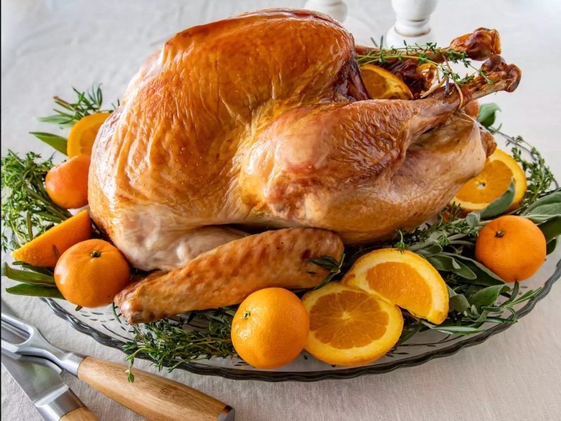

Juicy Thanksgiving Turkey

Description
This turkey recipe uses orange wedges and aromatics to add flavor, while a champagne broth works its magic to keep the turkey moist and tender. My grandmother and mother passed this recipe on to me. It changes a little every Thanksgiving, because I've never written the recipe down before. But the roast turkey is always incredibly juicy and succulent!
Ingredients
- 2 tablespoons dried parsley
- 2 tablespoons ground dried rosemary
- 2 tablespoons rubbed dried sage
- 2 tablespoons dried thyme leaves
- 1 tablespoon lemon-pepper seasoning
- 1 tablespoon salt
- 1 (15 pound) whole turkey, neck and giblets removed
- 1 medium orange, cut into 8 wedges
- 1 medium onion, chopped into large pieces
- 1 medium carrot, cut into 1/2-inch slices
- 2 stalks celery, cut into 1/2-inch slices
- 1 (750 milliliter) bottle champagne
- 1 (14.5 ounce) can chicken broth
Steps
- Gather all ingredients. Preheat the oven to 350 degrees F (175 degrees C). Line a roaster with sheets of aluminum foil long enough to wrap around turkey.
- Stir parsley, rosemary, sage, thyme, lemon-pepper seasoning, and salt together in a small bowl.
- Rub herb mixture into turkey cavity, then stuff with orange wedges, onion, carrot, and celery. Tie turkey legs together with kitchen string, then tuck the wings under the body.
- Place turkey on the foil in the roasting pan. Pour champagne and chicken broth over turkey, making sure to get some liquid in the cavity.
- Bring aluminum foil up and over the top of turkey and seal; try to keep the foil from touching the turkey.
- Roast turkey in the preheated oven until juices run clear, 2 ½ to 3 hours. Uncover turkey and continue baking until the skin turns golden brown, 30 to 60 more minutes. An instant-read thermometer inserted into the thickest part of thigh, near the bone, should read 180 degrees F (82 degrees C).
- Remove turkey from the oven, cover with two sheets of aluminum foil, and allow to rest in a warm area before slicing, 10 to 15 minutes.
- Serve and enjoy!
Back to Main Page